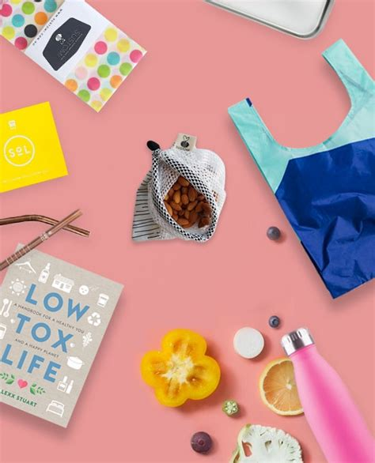
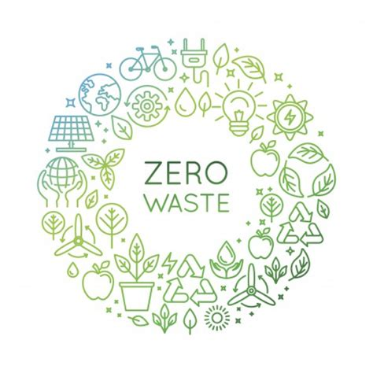
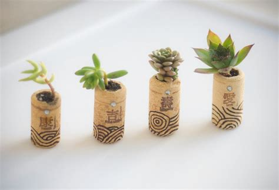

Plastic pollution

Factoids
- 50% of plastic is single-use
- Humans have produced more plastic in the last 10 years than all plastic made in the last cenutry
- 500 billion plastic bags are used a year worldwide
- Floating plastic makes up 40% of the world's ocean surfaces
- Virtually every piece of plsatic ever made still exists

What to do?
There are now many plastic free products available to replace your household items.
When you are not at home you can say no to plastic products like straws, cups and cutlery.
When shopping, try to avoid food that has excessive packaging and buy detergents in bulk. There are now lots of places where you can get refills for these too!

Zero plastic started pack
- Bag for life
- Fabric fruit and veg bag
- Reusable water bottle
- To-go mug
- Reusable lunch box
- Metal straw
- Wax food wraps
Fashion

Fast fashion facts
- Fashion is the 2nd most polluting industry in the world after oil
- Many fabrics contain chemical dyes which include lead, formaldehyde, pesticides and carcinogens which are dumped into local waterways and pollute areas around factories
- 11% of the words pesticides are used just on cotton
- To keep competitive, low prices, companies chase the cheapest labour. Unsuprisingly, only local law applies to these factories, so low pay, unsafe conditions and no rights are common.
- The average fast fashion item goes from store to landfill within a year

Modern day slavery
There are more slaves in the world today than at any other time in history and this is largely due to the fast fashion industry. The demand for vast amounts of clothes that need to be produced seasonaly to match the demand for cheap clothes, has lead to the rise in forced, unpaid labour and human trafficking for factory work.
Reducing your impact

The five rs of zero waste
Refuse - saying no to single use plastic
Reduce - only buy what you need
Reuse - replace disposable products with sustainable alternatives and if things break, try to fix them
Recycle - remember to clean and seperate everything into the right place
Rot - set up your own compost bin for all those fruit and veg scraps

Zero waste tips
Here are some tips to help you cut down on your impact using the 5 Rs of zero waste:
- If you end up with something you don't want or need, don't feel guilty, give it to a charity like Help Refugees.
- Give that pile of excess toiletries stacked away in your bathroom to a homeless charity.
- Before throwing away electronics or furtniture, look up what your counsel suggests you could do in your area. For example, many charity shops will pick up your furniture for free, and afterschool projects could use your craft supplies.
- Treat fixing things like the skill it is. It is very useful and valuable so offer to help friends out if you can fix something they want to throw away.
- Biodegradable products take longer to break down than food scraps so consider this when putting them in your compost. When in doubt, look up how they suggesting disposing of their product.
- Save used jars and use them for storage. They are great for keeping soups and sauces in the fridge, make-up brushes and candels.
- Before you throw something away, have a think or a google to see if you can use it for something else practical or crafty.
- Shop on zero waste websites like Plastic Freedom or Zero Waste Club.

Concious fashion
The best thing you can do is refrain from purchasing clothes from fast fashion outlets. Shop locally, go to charity shops, do clothes swaps with your friends and try to support transparent brands who have sustainable supply chains. You could also learn to upcycle clothes by editing items that don't fit, embellishing with different farbics or making it into someting else all together!